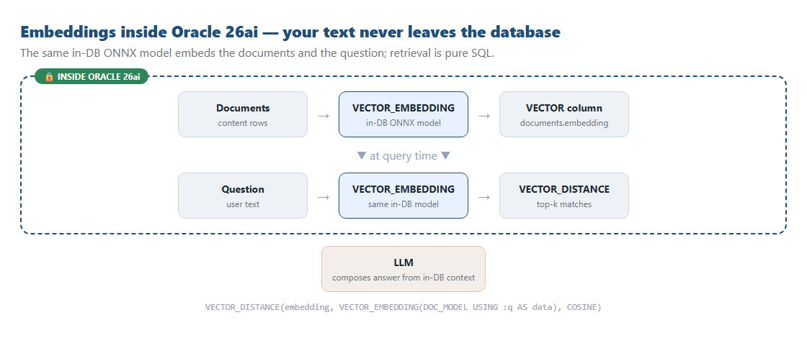
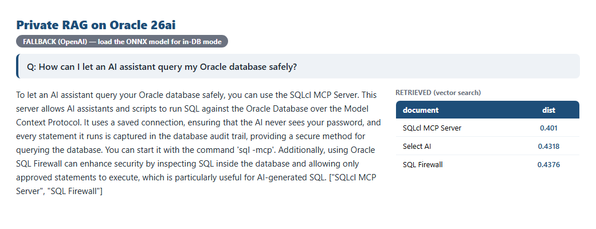

Retrieval-augmented Q&A where the embeddings happen inside Oracle 26ai — no text shipped to an external API.
Every RAG tutorial starts the same way: take your documents, send them to an embedding API, get vectors back. For a hobby project that's fine. For private or regulated data, shipping every document (and every user question) to a third-party endpoint is exactly the thing your security team won't sign off on.
Oracle 26ai offers a different path: load an embedding model into the database and generate the vectors where the data already lives. The text never leaves Oracle to be embedded.

1. Load an embedding model into Oracle (once). Oracle ships a prebuilt ONNX model you import with DBMS_VECTOR.LOAD_ONNX_MODEL.
2. Embed the documents in place — no data leaves the DB:
UPDATE documents
SET embedding = VECTOR_EMBEDDING(DOC_MODEL USING content AS data);3. Embed the question in the DB too, and retrieve — the user's text is embedded inside Oracle as part of the same query:
SELECT title,
VECTOR_DISTANCE(embedding,
VECTOR_EMBEDDING(DOC_MODEL USING :q AS data), COSINE) AS distance,
content
FROM documents
ORDER BY distance
FETCH APPROX FIRST 3 ROWS ONLY;Ask a question, get an answer grounded in the retrieved clauses — with the matched documents and their distances right there:

The demo auto-detects the in-DB model: if it's loaded, documents and queries are embedded inside Oracle; if not, it falls back to a client-side embedding API so you can try it immediately. Loading the ONNX model is a one-time admin step (it needs a credential to fetch the model), after which everything runs zero-external for embeddings and retrieval.
One scoping point: embeddings and retrieval are fully in-database. The final answer wording is still produced by an LLM from the retrieved context — swap in an in-database generation path (e.g. Select AI) if you want generation to stay in Oracle too.
CREATE MINING MODEL:
BEGIN
DBMS_VECTOR.LOAD_ONNX_MODEL(
directory => 'DATA_PUMP_DIR',
file_name => 'all_MiniLM_L12_v2.onnx',
model_name => 'DOC_MODEL',
metadata => JSON('{"function":"embedding","embeddingOutput":"embedding"}'));
END;
/CREATE TABLE documents (
doc_id NUMBER GENERATED BY DEFAULT AS IDENTITY PRIMARY KEY,
title VARCHAR2(160),
content VARCHAR2(4000),
embedding VECTOR(*, FLOAT32));UPDATE documents SET embedding = VECTOR_EMBEDDING(DOC_MODEL USING content AS data);End to end with the repo (runs immediately via the fallback; flips to in-DB once the model is loaded):
pip install -r requirements.txt
copy .env.example .env # set OPENAI_API_KEY + ORACLE_MCP_CONNECTION
python src/seed.py # build + embed the knowledge base (in-DB or fallback)
python src/ask.py # ask QUESTION; prints IN-DATABASE or FALLBACK mode
streamlit run src/dashboard.py # view answersVECTOR_EMBEDDING and VECTOR_DISTANCE in one statement — embed, search, done.The agent reaches the database through the SQLcl MCP Server, so even orchestration uses a saved connection and an audited path.
📦 Full code on GitHub: github.com/khadayatepa/in-db-embeddings-rag
A learning demo.